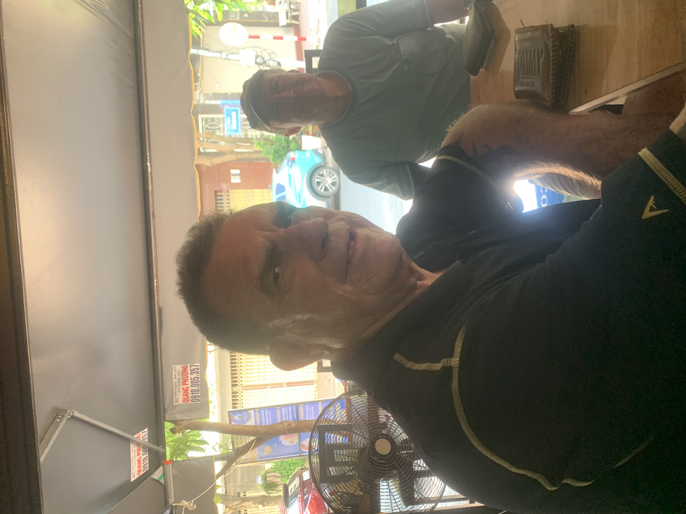

If Tommy announces that he's found a quick fix, secure all loose equipment and stand well clear!.

Mission:
Diagnose every suspicious bowl, repair whatever can be repaired, and keep the Dragonflies rolling straight — or at least give them a convincing explanation when they don't!.
Favourite Quote:
“No bowl beyond repair… no wanchor beyond treatment!”